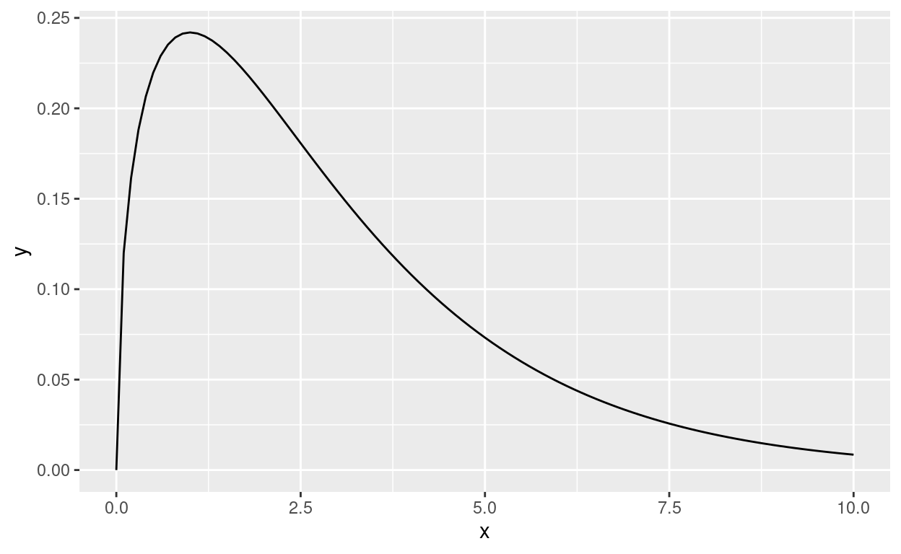
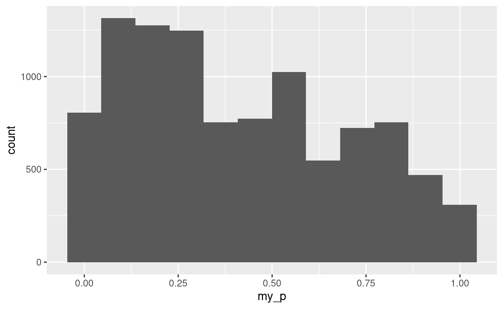

packages
the one-sample t-test
Suppose we have one sample of independent, identically distributed observations from some population, and we want to see whether we believe the population mean is some value, like 10. The standard test is the one-sample \(t\)-test:
x <- rnorm(n = 10, mean = 13, sd = 3)
x
[1] 17.865602 10.760958 12.193208 10.901395 13.639714 15.126906
[7] 9.765013 15.373931 13.012141 16.287639t.test(x, mu = 15)
One Sample t-test
data: x
t = -1.7994, df = 9, p-value = 0.1055
alternative hypothesis: true mean is not equal to 15
95 percent confidence interval:
11.59763 15.38768
sample estimates:
mean of x
13.49265 In this case, the P-value is 0.1055, so we do not reject the null hypothesis that the population mean is 10: there is no evidence (at \(\alpha = 0.05\)) that the population mean is different from 10.1 In this case, we have made a type II error, because the population mean is actually 8, and so the null hypothesis is actually wrong but we failed to reject it.
We use these data again later.
The theory behind the \(t\)-test is that the population from which the sample is taken has a normal distribution. This is assessed in practice by looking at a histogram or a normal quantile plot of the data:
ggplot(tibble(x), aes(sample = x)) + stat_qq() + stat_qq_line()
With a small sample, it is hard to detect whether a deviation from normality like this indicates a non-normal population or is just randomness. (In this case, I actually generated my sample from a normal distribution, so I know the answer here is randomness.)
There is another issue here, the Central Limit Theorem. This says, in words, that the sampling distribution of the sample mean from a large sample will be approximately normal, no matter what the population distribution is. How close the approximation is will depend on how non-normal the population is; if the population is very non-normal (for example, very skewed or has extreme outliers), it might take a very large sample for the approximation to be of any use.
Example: the chi-squared distribution is right-skewed, with one parameter, the degrees of freedom. As the degrees of freedom increases, the distribution becomes less skewed and more normal in shape.2
Consider the chi-squared distribution with 12 df:
This is mildly skewed. Is a sample of size 20 from this distribution large enough to use the \(t\)-test? We can simulate the sampling distribution of the sample mean, since we know what the population is, by drawing many (in this case 1000) samples from it and seeing now normal the simulated sample means look:
This is a tiny bit skewed right (the very largest values are slightly too large and the very smallest ones not quite small enough, though the rest of the values hug the line), but I would consider this close enough to trust the \(t\)-test.
Now consider the chi-squared distribution with 3 df, which is more skewed:
tibble(x = seq(0, 10, 0.1)) %>%
mutate(y = dchisq(x, df = 3)) %>%
ggplot(aes(x = x, y = y)) + geom_line()

How normal is the sampling distribution of the sampling mean now, again with a sample of size 20?
tibble(sim = 1:1000) %>%
rowwise() %>%
mutate(my_sample = list(rchisq(n = 20, df = 3))) %>%
mutate(my_mean = mean(my_sample)) %>%
ggplot(aes(sample = my_mean)) + stat_qq() + stat_qq_line()

This time, the normal quantile plot definitely strays from the line in a way that indicates a right-skewed non-normal sampling distribution of the sample mean. With the same sample size, if the population is as skewed as a chi-squared distribution with 12 degrees of freedom, the \(t\)-test is fine, but if it is as skewed as a chi-squared distribution with 3 degrees of freedom, the \(t\)-test is at best questionable.
So, consideration of whether to use a \(t\)-test has two parts: how normal the population is (answered by asking how normal your sample is), and how large the sample is. The larger the sample size is, the less the normality matters, but it is an awkward judgement call to assess whether the non-normality in the data distribution matters enough given the sample size.
the sign test
If you have decided that your sample does not have close enough to a normal distribution (given the sample size), and therefore that you should not be using the \(t\)-test, what do you do? Two standard options are the sign test and the signed-rank test, with the latter often being recommended over the former because of the formers lack of power. These tests are both non-parametric, in that they do not depend on the data having (at least approximately) any specific distribution.
For the sign test, you count how many of your observations are above and below the null median:
The number of values (say) below the null median is the test statistic. If the null hypothesis is true, each value is independently either above or below the null median with probability 0.5, and thus the test statistic has a binomial distribution with \(n\) equal to the sample size and \(p = 0.5\). Hence the P-value for a two-sided test is
counting upwards from 6 because 6 is above halfway in the null distribution, and multiplying by two to get a two-sided P-value. The split of 4 values above 10 and 6 below is very close to 5050, and so the P-value is large, much larger than for the \(t\)-test.
The sign test does not use the data very efficiently: it only counts whether each data value is above or below the hypothesized median. Thus, if you are in a position to use the \(t\)-test that uses the actual data values, you should do so. However, it is completely assumption-free: as long as the observations really are independent, it does not matter at all what the population distribution looks like.
the signed rank test
The signed-rank test occupies a kind of middle ground between the sign test and the \(t\)-test.
Heres how it works for our data, testing for a median3 of 10:
tibble(x) %>%
mutate(diff = x - 15) %>%
mutate(abs_diff = abs(diff)) %>%
mutate(rk = rank(abs_diff)) -> d
d
# A tibble: 10 4
x diff abs_diff rk
<dbl> <dbl> <dbl> <dbl>
1 17.9 2.87 2.87 7
2 10.8 -4.24 4.24 9
3 12.2 -2.81 2.81 6
4 10.9 -4.10 4.10 8
5 13.6 -1.36 1.36 4
6 15.1 0.127 0.127 1
7 9.77 -5.23 5.23 10
8 15.4 0.374 0.374 2
9 13.0 -1.99 1.99 5
10 16.3 1.29 1.29 3Subtract the hypothesized median from each data value, and then rank them smallest to largest in terms of absolute value. The smallest difference in size is 0.127, which gets rank 1, and the largest in size is \(-5.23\), which gets rank 10.
The next stage is to sum up the ranks separately for the positive and negative differences:
# A tibble: 2 2
`diff > 0` sum
<lgl> <dbl>
1 FALSE 42
2 TRUE 13There are only four positive differences, including the two smallest differences in size, so their ranks add up to only 13, compared to a sum of 42 for the negative differences. The standard procedure is to take the smaller of these as the test statistic (for a two-sided test), so the test statistic here is 13.
If the null hypothesis is true, we would expect the positive and negative differences to have ranks that add up to about the same, so the test statistic would be large (the largest it could be is 27, since the ranks 1 through 10 add up to 55 and the most even split is 28 and 27). If the null hypothesis is false, most of the big differences will be on one side, so the test statistic will be small. Here, the test statistic is at least somewhat small; the difference from the sign test is that two of the four positive differences are close to zero and have small ranks, so that even though four ranks are being summed, two of them are small.
Is 13 small enough to reject the null with?
wilcox.test(x, mu = 15)
Wilcoxon signed rank exact test
data: x
V = 13, p-value = 0.1602
alternative hypothesis: true location is not equal to 15The P-value is 0.1602, not small enough to reject the null median of 10. It is a little bigger than for the \(t\)-test, but a lot smaller than for the sign test.
A historical note: the name usually attached to the signed-rank test is Frank Wilcoxon. He worked out the null distribution of the signed rank statistic (an exercise in combinatorics).
The R function is a bit of a confusing misnomer, because there was also a statistician called Walter Francis Willcox, who had nothing to do with this test.
assessing the signed rank test
The signed-rank test seemed to behave well enough in our example, with actually normal data. But the point of mentioning the test is as something to use when the data are not normal.
So lets take some samples from our skewed chi-squared distribution with 3 df.
This distribution has this median:
med <- qchisq(0.5, 3)
med
[1] 2.365974and away we go:
tibble(sim=1:1000) %>%
rowwise() %>%
mutate(my_sample = list(rchisq(10, 3))) %>%
mutate(my_test = list(wilcox.test(my_sample, mu = med, alternative = "greater"))) %>%
mutate(my_p = my_test$p.value) -> dd
dd
# A tibble: 1,000 4
# Rowwise:
sim my_sample my_test my_p
<int> <list> <list> <dbl>
1 1 <dbl [10]> <htest> 0.862
2 2 <dbl [10]> <htest> 0.722
3 3 <dbl [10]> <htest> 0.5
4 4 <dbl [10]> <htest> 0.615
5 5 <dbl [10]> <htest> 0.0322
6 6 <dbl [10]> <htest> 0.947
7 7 <dbl [10]> <htest> 0.0322
8 8 <dbl [10]> <htest> 0.0244
9 9 <dbl [10]> <htest> 0.0967
10 10 <dbl [10]> <htest> 0.539
# with 990 more rowsSince the null hypothesis is true, the P-values should have a uniform distribution:
ggplot(dd, aes(sample = my_p)) + stat_qq(distribution = qunif) + stat_qq_line(distribution = qunif)

ggplot(dd, aes(x = my_p)) + geom_histogram(bins = 12)
That doesnt look very uniform. To investigate what happened, lets
x <- rchisq(10, 3)
x
[1] 2.3835344 6.3125451 4.5974409 4.3696598 0.5378143 3.6190950
[7] 2.8584598 3.1349870 6.4139569 1.7444705This distribution has this median:
med <- qchisq(0.5, 3)
med
[1] 2.365974and go through the calculations for the signed rank statistic again:
tibble(x) %>%
mutate(diff = x - med) %>%
mutate(abs_diff = abs(diff)) %>%
mutate(rk = rank(abs_diff)) -> d
d
# A tibble: 10 4
x diff abs_diff rk
<dbl> <dbl> <dbl> <dbl>
1 2.38 0.0176 0.0176 1
2 6.31 3.95 3.95 9
3 4.60 2.23 2.23 8
4 4.37 2.00 2.00 7
5 0.538 -1.83 1.83 6
6 3.62 1.25 1.25 5
7 2.86 0.492 0.492 2
8 3.13 0.769 0.769 4
9 6.41 4.05 4.05 10
10 1.74 -0.622 0.622 3and the test statistic is
# A tibble: 2 2
`diff > 0` sum
<lgl> <dbl>
1 FALSE 9
2 TRUE 46This seems like a bit of a difference in rank sums, given that the null hypothesis is actually true.